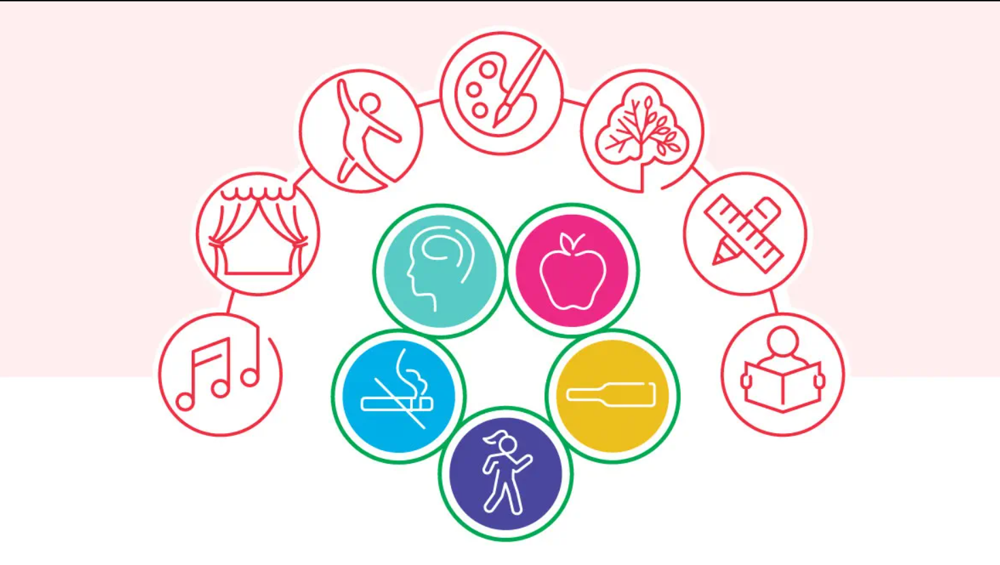
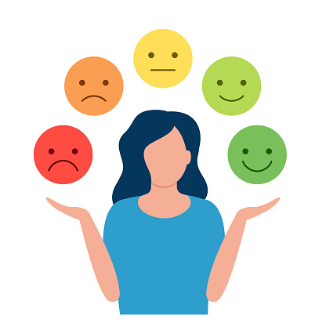

Wellness combines seven dimensions of well-being into a quality way of living. These
dimensions include:physical (body), intellectual (mind), emotional (feelings), social
(family, friends, relationship),occupational (career, skills), environment (air, water,
food, safety), and spiritual (values, purpose, intuition, vitality). Overall, wellness
is the ability to live life to the fullest and to maximize personal potential in a variety
of ways. Wellness places responsibility on the individual; it becomes a matter of
self-evaluation and self-assessment. Wellness involves continually learning and making
changes to enhance personal wellness.
A healthy body is maintained by good nutrition, regular exercise, avoiding harmful habits, making informed and responsible decisions about health, and seeking medical assistance when necessary.
A state in which the mind is engaged in lively interaction with the world.
Intellectual wellness involves unbridled curiosity and ongoing learning. This dimension of wellness implies application of learning, creation of opportunities to learn, and engagement with the world around you.

The ability to understand ones own feelings, accept limitations, achieve emotional stability, and become comfortable with emotions.
Emotional wellness implies the ability to express emotions appropriately, adjust to change, cope with stress in a healthy way, and enjoy life despite its occasional disappointments and frustrations. It also means developing the ability to address problems or conflicts in an appropriate and constructive manner.
Social (Family, Friends, Relationships)
The ability to relate well to others, both within and outside the family unit.
Social wellness endows us with the ease and confidence to be welcoming, friendly, and affectionate toward others. Social wellness involves not only a concern for the individual, but also an interest in humanity and the environment as a whole.
The ability to relate well to others, both within and outside the family unit.
Social wellness endows us with the ease and confidence to be welcoming, friendly, and affectionate toward others. Social wellness involves not only a concern for the individual, but also an interest in humanity and the environment as a whole.
Occupational (Career, Skills)
Recognizing and making use of your gifts, skills and talents in order to gain purpose, happiness and enrichment in your life.
Occupational wellness means successfully integrating a commitment to work into a total lifestyle that is satisfying and rewarding. The development of occupational satisfaction and wellness is strongly related to attitude about work.
The capability to live in a clean and safe environment that is supportive of health.
The quality of today's environment has a direct effect on personal wellness. To enjoy environmental wellness, we require clean air, pure water, quality food, adequate shelter, satisfactory work conditions, personal safety, and healthy relationships. The development of a comfortable, inspirational environment that enhances rather than just maintain overall wellness is the desired outcome.
The sense that life is meaningful and has a purpose; the ethics, values and morals that guide and give meaning and direction to life.
Spiritual wellness is a search for meaning and purpose, and truth in human existence.


lotuscare22@gmail.com

+61 123 456 789